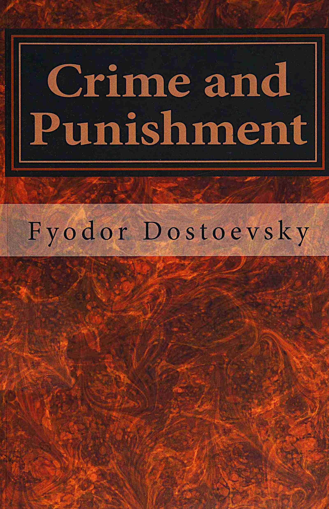

Crime and Punishment
الجريمة والعقاب
الأدب
ملك عام
ترجمة كاملة
الجريمة والعقاب لدوستويفسكي: راسكولنيكوف يقتل المرابية العجوز ويواجه ضميره في بطرسبرغ محتومة — الاعتراف والكفارة وسونيا والبعث من الرماد. ترجمة كاملة للرواية والخاتمة.
| المؤلف | فيودور دوستويفسكي (ترجمة كونستانس غارنيت) — Fyodor Dostoevsky (translated by Constance Garnett) |
| سنة النص الأصلي | ١٨٦٦ |
| كلمات المصدر (الإنجليزية) | ١٩٤٨٤٥ |
| كلمات الترجمة (العربية) | ١٥٦٩٧٢ |
| مقاطع الترجمة المدققة | ١١٢ |
| مدة القراءة التقريبية | ≈ ٣٥٧٠ دقيقة |
الترخيص والحقوق: النص الأصلي (ترجمة غارنيت) في الملك العام (غوتنبرغ #2554). هذه الترجمة العربية منشورة بإذن حر.